방송통신산업기사 (2003-08-31 기출문제)
1과목: 디지털 전자회로
1. B급 증폭기의 최대 효율을 백분율로 표시하면?
- 25(%)
- 48.5(%)
- 78.5(%)
- 98.5(%)
(정답률: 알수없음)

2. 주파수변조에서 변조지수가 6이고, 신호의 최고주파수를 10[kHz]라고 했을 때 그 소요 대역폭은 몇 [kHz]인가? (단, 광대역 FM이라 가정한다.)
- 20
- 60
- 100
- 120
(정답률: 알수없음)
3. LC 동조 발진기에 비해 수정 발진기의 특징으로 잘못 설명한 것은?
- 안정도가 높다.
- Q가 비교적 크다.
- 발진 주파수를 가변하기 어렵다.
- 저주파 발진기로 적합하다.
(정답률: 알수없음)
4. JK 플립플롭을 사용하여 D형 플립플롭을 만들려면 외부 결선은 어떻게 하는 것이 옳은가?
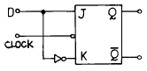
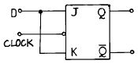
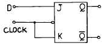
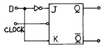
(정답률: 알수없음)
5. 그림과 같은 이상적인 연산 증폭기에서 Vs/Is는?
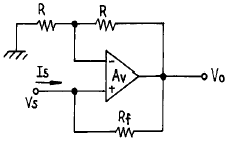
- -Rf
- R + Rf
- -R
- R - Rf
(정답률: 알수없음)
6. 캐패시터로 필터링된 전파정류기의 부하저항이 적게 된다면 리플 전압은?
- 감소한다.
- 증가한다.
- 영향이 없다.
- 다른 주파수를 갖는다.
(정답률: 알수없음)
7. R과 C에 의하여 발진주파수가 결정되는 발진회로에서 RC 시정수를 작게 하면 발진파형은 어떤 변화가 생기는가?
- 발진주파수가 낮아진다.
- 발진주파수가 높아진다.
- 아무런 변화가 없다.
- 펄스의 점유율(duty ratio)이 많이 커진다.
(정답률: 알수없음)
8. 그림과 같은 논리 회로의 출력은?
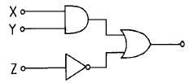
- (X + Y) ·

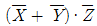
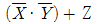
- (X · Y) +
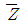
(정답률: 알수없음)
9. 그림의 회로 명칭은?
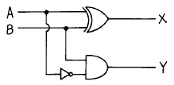
- 가산기
- RS 플립플롭
- 감산기
- 반감산기
(정답률: 알수없음)
10. 이득 100인 저주파 증폭기가 10[%]의 왜율을 가지고 있을 때 이것을 1[%]로 개선하기 위해서는 얼마의 전압 부궤환을 걸어 주어야 하는가?
- 1
- 0.9
- 0.09
- 0.009
(정답률: 알수없음)
11. 전가산기(full adder)의 구조는?
- 입력 2개, 출력 4개로 구성된다.
- 입력 2개, 출력 3개로 구성된다.
- 입력 3개, 출력 2개로 구성된다.
- 입력 3개, 출력 3개로 구성된다.
(정답률: 알수없음)
12. FET에서 VGS=0.7[V]로 일정히 유지하고 VDS를 6[V]에서 10[V]로 변화시켰을 때 ID가 10[㎃]에서 12[㎃]로 변하였다. 드레인 저항(Rd)은 얼마인가?
- 0.5[㏀]
- 0.5[㏁]
- 2[㏀]
- 8[㏀]
(정답률: 알수없음)
13. 그림과 같은 회로의 입력에 정현파(Vi)를 인가했을 때의 전달 특성은? (단, 다이오드의 동작시 저항성분은 Rf이며, Rf＜R 이다.)
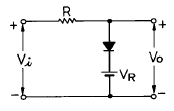
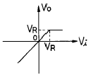
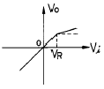
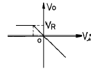
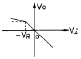
(정답률: 알수없음)
14. 제너 다이오드를 사용하는 회로는?
- 증폭회로
- 검파회로
- 전압안정회로
- 저주파발진회로
(정답률: 알수없음)
15. 다이오드 D1, D2의 항복 전압을 Vz라면 회로에서 D1, D2가 모두 차단(OFF)될 조건으로 옳은 것은?
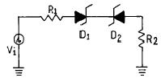
- Vi = Vz
- Vi = -Vz
- -Vz ＜ Vi ＜ Vz
- -Vz ＞ Vi ＞ Vz
(정답률: 알수없음)
16. 그림의 회로는 어떤 논리 동작을 하는가?
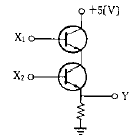
- AND
- OR
- NOR
- NAND
(정답률: 알수없음)
17. 900[KHz]의 반송파를 5[KHz]의 신호주파수로 진폭변조한 경우 피변조파에 나타나는 주파수 성분이 아닌 것은?
- 900[KHz]
- 895[KHz]
- 9⑤[KHz]
- 5[KHz]
(정답률: 알수없음)
18. 그림과 같은 카르노도(Karnaugh Map)에서 얻어지는 부울대수식은?
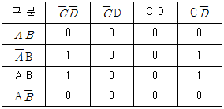
- y = B
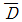
- y =
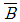
D - y = A B
- y =
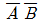
(정답률: 알수없음)
19. 트랜지스터가 차단과 포화에서 동작될 때 무엇처럼 동작하는가?
- 스위치
- 선형증폭기
- 가변용량
- 가변저항
(정답률: 알수없음)
20. 다음은 에미터폴로워(emitter follower)의 임피던스 특성이다. 옳은 것은?
- 입력임피던스와 출력임피던스 모두 작다.
- 입력임피던스와 출력임피던스 모두 크다.
- 입력임피던스는 크고 출력임피던스는 작다.
- 입력임피던스는 작고 출력임피던스는 크다.
(정답률: 알수없음)
2과목: 방송통신 기기
21. 변조도가 60[%]인 AM송신기에서 반송파의 평균전력이 500[mW]일때에 출력의 평균전력은?
- 460[mW]
- 520[mW]
- 590[mW]
- 700[mW]
(정답률: 알수없음)
22. 정해진 시각에 정해진 프로그램을 정해진 지역으로 양호한 상태로 송출하기 위한 방송국의 기간 설비가 집중되어 있는 곳은?
- 부조정실
- 주조정실
- 헤드엔드(head end)
- 스튜디오
(정답률: 알수없음)
23. TV 방송시스템에서 영상신호의 정격 크기는?
- 1[Vp-p]
- 2[Vp-p]
- 3[Vp-p]
- 4[Vp-p]
(정답률: 알수없음)
24. TV 방송의 연주소에서 영상프로그램의 제작이나 송출시 사용하는 동기신호는 다음 가운데 어느 것을 Main으로 하는가?
- 카메라에서 발생한 동기 신호를 Main으로 한다.
- VTR에서 Play되는 동기신호를 Main으로 한다.
- 중계차에서 보내오는 동기신호를 Main으로 한다.
- Synch Generator에서 발생한 신호를 Main으로 한다.
(정답률: 알수없음)
25. 마이크의 지향성에 관한 설명 중 옳지 않은 것은?
- 전지향성 마이크는 목적음 이외에도 상황음을 동시에 효과적으로 수음할 수 있다.
- 초지향성 마이크는 지향성이 예민하여 20도 이내의 범위에서의 음을 수음한다.
- 양지향성 마이크는 8자형의 지향특성을 갖는다.
- 단일지향성 마이크는 정면 및 좌우면의 음을 균등하게 수음할 수 있다.
(정답률: 알수없음)
26. NTSC 방식에서 컬러TV의 색부반송파 주파수는 얼마인가?
- 4.58㎒
- 3.58㎒
- 2.58㎒
- 1.58㎒
(정답률: 알수없음)
27. 방송용 송신기에 사용되는 전력증폭기의 입력전력이 4[mW] , 출력전력이 4[W]일 때 전력이득은?
- 60[dBm]
- 40[dBm]
- 30[dBm]
- 10[dBm]
(정답률: 알수없음)
28. 영상압축의 기본은 영상신호의 중복성을 제거하여 압축시키는 것이 기본적인 원리이다. 다음중 중복성 제거방법이 아닌 것은?
- 색신호간 중복성
- 공간적 중복성
- 통계적 중복성
- MULTI CH의 중복성
(정답률: 알수없음)
29. 컬러 모니터를 포함한 방송장비 조정을 위해 컬러-바 신호를 사용하는데 이의 측정사항에 포함되지 않는 것은?
- 휘도 레벨
- 색상
- 색도 레벨
- 주파수 응답
(정답률: 알수없음)
30. 방송 장비 가운데 CCU 는 어떠한 장비인가?
- 여러 개의 영상신호 가운데 하나의 신호를 선택하는 장비이다.
- 연주소에서 송신소로 방송신호를 보내는 장비이다.
- 그림이나 문자를 발생하는 컴퓨터 장비이다.
- 카메라를 컨트롤하는 장비이다.
(정답률: 알수없음)
31. AM 송신기에서 사용하지 않는 회로는?
- 주파수 체배기
- 완충증폭기
- 발진기
- 주파수 변별회로
(정답률: 알수없음)
32. 다음 사항중 틀린것은?
- 정지 위성통신 시스템은 약 36,000Km 궤도상에 위치한다.
- 하나의 정지궤도 위성은 지구표면의 약 42.4%를 커버한다.
- 소형저궤도 위성은 20GHz 이상의 주파수대로 구성된다.
- 소형저궤도 위성은 메시지전송, 위치정보 서비스 등의 비음성 서비스를 주로 한다.
(정답률: 알수없음)
33. 위성 방송의 특징으로 맞지 않는 것은?
- 회선설정이 유연하다.
- 대역폭이 비교적 넓다.
- 타매체에 비해 전송지연시간이 짧다.
- 기상의 영향을 많이 받는다.
(정답률: 알수없음)
34. 채널용량을 증대하기 위한 설명으로 틀린것은?
- 대역폭을 크게 한다.
- 채널의 대역 압축을 증가시킨다.
- 잡음의 크기를 줄인다.
- 신호대 잡음비를 감소한다.
(정답률: 알수없음)
35. 위성방송에서 송수신을 위한 지구국의 안테나로 이용되는 것은?
- 파라볼라안테나
- 혼 안테나
- 카세그레인안테나
- 롬빅안테나
(정답률: 알수없음)
36. 정보압축 기술에 의한 장점을 잘못 설명한 것은?
- 통신 미디어의 경우 영상 등의 멀티미디어 통신이 가능해 진다.
- 저장 미디어의 경우 기록에 필요한 점유량을 작게 할수 있다.
- 방송 미디어의 경우 열화가 적고 고품질 전송이 가능하다.
- 전파 자원의 효율적 활용 측면에서는 불리하다.
(정답률: 알수없음)
37. 전송복합 NTSC 칼라 영상신호에 대한 설명 중 틀린 것은?
- 변조의 극성은 포지티브(Positive) 이다.
- 가장 높은 신호의 진폭은 화상의 가장 어두운 부분이다.
- R, G, B 3원색 신호로부터 휘도신호, I 신호, Q 신호를 전송한다.
- 흑색 레벨은 전송될 최대 신호의 75 [%] 와 동일한 진폭에 도달한다.
(정답률: 알수없음)
38. 비디오 특성 측정에 사용되는 시험 패턴 중 멀티버스트 신호는 다음 중 어느 용도로 사용되는가?
- 주파수대 위상 측정
- 주파수대 진폭 특성 측정
- 과도 잡음 특성
- 비직선 왜곡 측정
(정답률: 알수없음)
39. 전파매체 제1세대는 라디오이다. 이러한 라디오는 최근 새로운 기술적 변화추세를 보이고 있다. 종래의 라디오에 문자정보를 수록한 "듣고 보는 라디오"는 무엇인가?
- SDAB
- RBDS
- DAB
- DAR
(정답률: 알수없음)
40. 케이블TV의 발달과 함께 무선케이블TV라는 새로운 개념의 전송방식이 활용되고 있는데 이러한 무선케이블TV 전송방식을 옳게 설명한 것은?
- 아파트지역 등 기반시설이 잘 갖추어져 있고 가입자가 밀집해 있다면 무선케이블TV의 효율성은 높다.
- 빠른 시간안에 망 구축이 가능하나, 유지 보수 비용이 비싼게 단점이다.
- 무선케이블TV 방식으로는 MMDS방식과 LMDS방식이 있다.
- 양방향 서비스가 가능하나, VOD, 원격검침, 홈쇼핑서비스 등에는 추가설비가 필요하다.
(정답률: 알수없음)
3과목: 방송미디어 개론
41. 케이블TV 방송 시스템의 상행 주파수대역은?
- 0∼21[MHz]
- 5∼42[MHz]
- 54∼450[MHz]
- 51∼750[MHz]
(정답률: 알수없음)
42. 방송미디어가 아닌 것은?
- CATV
- TV
- VOD
- FM
(정답률: 알수없음)
43. NTSC 컬러 TV방식에서 R,G,B 삼원색으로부터 휘도신호Y와 색차신호 R-Y, B-Y로 변환되어 사용하고 있다. 색차신호 B-Y가 바르게 표현된 식은?
- B-Y = 0.30R ＋ 0.59G ＋ 0.11B
- B-Y = 0.70R - 0.59G - 0.11B
- B-Y = -0.30R - 0.59G + 0.89B
- B-Y = -0.30R ＋ 0.41G - 0.11B
(정답률: 알수없음)
44. OSI(Open Systems Interconnection) 7계층의 순서가 올바른 것은?
- 물리계층-네트워크계층-데이터링크계층-트랜스포트계층-세션계층-표현계층-응용계층
- 물리계층-데이터링크계층-트랜스포트계층-네트워크계층 -세션계층-표현계층-응용계층
- 물리계층-네트워크계층-데이터링크계층-트랜스포트계층-표현계층-세션계층-응용계층
- 물리계층-데이터링크계층-네트워크계층-트랜스포트계층-세션계층-표현계층-응용계층
(정답률: 알수없음)
45. 방송에서 음성을 제작하는 시스템의 성능을 나타내는 기술적 요소 중 음성장비의 성능을 나타내는 요소가 아닌 것은?
- Sync level
- S/N비
- 주파수특성
- Cross-talk
(정답률: 알수없음)
46. 유럽에서 개발중인 지상파 디지털방송의 변조방식은?
- 직교주파수분할방식(OFDM)
- 잔류측파대 크기변조방식(VSB-AM)
- 단일 측파대 크기변조방식(SSB-AM)
- 시분할방식(TDM)
(정답률: 알수없음)
47. 다음 영상 미디어 가운데 전자파를 이용하지 않아도 되는 것은?
- TV
- FM 방송
- 극장영화
- 무선 Internet
(정답률: 알수없음)
48. 우리나라의 공중파방송에서 FM방송 밴드는 주파수 밴드별로 나누면 어느 곳에 위치하는가?
- AM 표준방송 밴드와 TV VHF Low 채널 사이
- TV VHF BAND에서 Low 채널과 High 채널 사이
- TV VHF High 채널과 UHF 사이
- UHF와 SHF 사이
(정답률: 알수없음)
49. 우리나라에서 지상파 디지털 텔레비전에 사용되는 전송방식은 어느 것인가?
- COFDM 방식
- 8-VSB 방식
- BST-OFDM 방식
- CDMA 방식
(정답률: 알수없음)
50. FM 방송에서 최대 주파수 편이가 20[㎑], 변조도가 0.5이고 신호 주파수가 5[㎑]일 때의 변조지수는 얼마인가?
- 2
- 4
- 10
- 25
(정답률: 알수없음)
51. 다음 중 케이블 TV 방송시스템의 구성요소가 아닌 것은?
- 가입자계
- 전송계
- 무선계
- 송출계
(정답률: 알수없음)
52. NTSC 방식의 최대 영상주파수는?
- 3[㎒]
- 4.2[㎒]
- 4.5[㎒]
- 5[㎒]
(정답률: 알수없음)
53. 다음 보기 항에는 문자 폰트를 표현하는 방식이 세가지항과 다른 것이 한가지 있다. 해당되는 것은?
- 비트맵 폰트
- 트루타입 폰트
- 포스트스크립트 폰트
- 벡터 폰트
(정답률: 알수없음)
54. 우리나라 디지탈 TV방송의 영상신호 압축 포맷 방식은 어느 방식으로 결정하였는가?
- MPEG-2
- AMPEG-2
- Dolby AC-3
- DVB(Ⅲ)
(정답률: 알수없음)
55. 다음 멀티미디어의 설명 중에서 거리가 먼 것은?
- 멀티미디어는 두가지 이상의 미디어를 사용하는 것이다.
- 멀티미디어는 여러 미디어들을 동시에 사용할 수 있어야 한다.
- 미디어를 사용하기 위해 하나의 시스템을 사용한다.
- 사용자는 시스템과 대화(Interactive)가 전혀 필요없다.
(정답률: 알수없음)
56. 텔레비전 수신기에서 2차원의 화상을 1차원의 전기적인 신호로 전송하기 위해 2차원 화상을 1차원적인 화상으로 재배열하는 것을 무엇이라 하는가?
- 변조
- 주사
- 복조
- 편이
(정답률: 알수없음)
57. 통신계 미디어만을 예로 든 것은?
- TV문자다중방송, 비디오텍스, VOD(비디오 온 디맨드)
- 비디오텍스, VOD, 전자게시판
- TV문자다중방송, 비디오텍스, 전자게시판
- TV문자다중방송, ISDN, VOD
(정답률: 알수없음)
58. TV방송국의 송신안테나에서 발사되는 전파의 편파는?
- 수평편파
- 수직편파
- 회전편파
- 타원편파
(정답률: 알수없음)
59. 다음 중 TV 화면에 횡으로 또는 종으로 희고 가는줄이 여러겹 나타나고 이들이 좌우 또는 상하로 이동하는 현상은?
- Beat 방해 현상
- HUM 변조 현상
- SNOW 현상
- 혼변조 현상
(정답률: 알수없음)
60. 멀티미디어 데이터 압축 기법에 대하여 틀린 사항은?
- 압축 후 복원의 결과가 원래의 데이터와 큰 차이가 없어야 한다.
- 너무 복잡한 압축알고리즘은 압축작업 자체에 부담을 주기 때문에 가능한 간단해야 한다.
- 압축과 복원으로 인한 지연시간이 길어야 한다.
- 하드웨어적 구현과 소프트웨어적 구현이 모두 가능한 것이 좋다.
(정답률: 알수없음)
4과목: 전자계산기 일반 및 방송설비기준
61. 다음 중 전송망사업의 신청 형태는?
- 허가제
- 신고제
- 인가제
- 등록제
(정답률: 알수없음)
62. 자료형 중에서 가장 적은 비트를 필요로 하는 것은?
- 실수형 자료
- 정수형 자료
- 논리형 자료
- 문자형 자료
(정답률: 알수없음)
63. 순서도의 작성 시기는?
- 입.출력 설계 후
- 타당성 조사 후
- 프로그램 코딩 후
- 자료 입력 후
(정답률: 알수없음)
64. 다음 중 CPU가 수행하는 4개 사이클(cycle)에 속하지 않는 것은?
- Fetch cycle
- Execute cycle
- Interrupt cycle
- jump cycle
(정답률: 알수없음)
65. 다음은 수신설비가 갖추어야 할 구비조건이다. 틀린 것은?
- 내부잡음이 적을것
- 감도가 적을 것
- 선택도가 클 것
- 명료도가 충분할 것
(정답률: 알수없음)
66. 방송발전기금의 징수에 있어서 방송광고 연간 매출액의 얼마의 범위안에서 징수율을 고시하는가?
- 100분의 2
- 100분의 3
- 100분의 5
- 100분의 6
(정답률: 알수없음)
67. 다음 중 종합유선방송국의 허가절차 중 틀린 것은?
- 종합유선방송국을 하고자 하는 자는 대통령령이 정하는 바에 따라 시도지사를 거쳐 방송위원회의 허가를 받아야 한다.
- 방송위원회는 허가사항을 심사하고자 할 때에는 시도지사의 의견을 들어야 한다.
- 방송위원회는 허가를 심사함에 있어서 기술기준의 적합성여부는 정보통신부장관과 합의하여야 한다.
- 방송위원회는 종합유선방송국을 허가한 때에는 당사자 및 중앙관계기관의 장에게만 통보하여야 한다.
(정답률: 알수없음)
68. 인터럽트를 발생시키는 장치들을 직렬로 연결시키는 하드웨어적인 우선 순위 제어 방식은?
- hand shaking
- daisy chain
- spooling
- polling
(정답률: 알수없음)
69. 174㎒ ∼ 216㎒ 까지의 주파수 대역을 무엇이라 하는가?
- 초단파 저대역
- 초단파 고대역
- 극초단파 저대역
- 극초단파 고대역
(정답률: 알수없음)
70. 마이크로 컴퓨터에서 시스템 버스 중 틀린 것은?
- data bus
- address bus
- control bus
- I/O bus
(정답률: 알수없음)
71. 방송위원회의 위원의 결격사유에 해당없는 것은?
- 정당법에 의한 당원
- 법관
- 전송망사업에 종사하는 자
- 방송사업에 종사하는 자
(정답률: 알수없음)
72. 전파법상 방송국 허가유효기간은 3년이다. 방송사업자가 재허가를 받고자 하는 경우 재허가 신청기간으로 올바른 것은?
- 허가유효기간 만료전 1월이상 2월 이내
- 허가유효기간 만료전 2월 이내
- 허가유효기간 만료전 2월이상 4월이내
- 허가유효기간 만료전 4월 이내
(정답률: 알수없음)
73. 미국 표준 코드로서 1개의 패리티 비트와 3개의 존 비트, 그리고 4개의 디지트 비트로 구성되는 코드체계는?
- 8421 코드
- ASCII 코드
- Hamming 코드
- EBCDIC 코드
(정답률: 알수없음)
74. 다음 중 명령어의 주소부에 데이터를 직접 넣어주는 방식은?
- 절대 번지 지정
- 즉치(immediate)번지 지정
- 상대 번지 지정
- 레지스터 번지 지정
(정답률: 알수없음)
75. 읽고 쓰기가 가능하고 전원이 소멸되어도 기억된 내용이 지워지지 않는 RAM과 같은 ROM은?
- 캐시메모리
- 플레시메모리
- 가상메모리
- 연상기억장치
(정답률: 알수없음)
76. 지상파 디지털 텔레비전방송에서 영상, 음성, 데이터신호 및 시스템 정보스트림을 하나의 전송스트림으로 다중화한다. 이 다중화의 기술적 조건은 어느 기준을 따르는가?
- MPEG-2 국제표준인 ISO/IEC 13818-1을 따른다.
- ITU-T의 국제표준인 X.25를 따른다.
- JTC1/SC29/WG11을 따른다.
- IEEE/802.1∼9를 따른다.
(정답률: 알수없음)
77. 캐시 메모리를 사용하는 이유로 가장 타당한 것은?
- 평균 액세스 시간이 증가시키기 위해 사용한다.
- 프로그램의 총 실행 시간을 단축시킬 수 있다.
- 기억 용량이 증가한다.
- 기억 용량이 감소한다.
(정답률: 알수없음)
78. 종합유선방송 구내전송선로설비에 사용되는 설비가 아닌것은?
- 분기기 및 분배기
- 동축케이블 및 광케이블
- 증폭기
- 보호기
(정답률: 알수없음)
79. 시프트 레지스터에 저장된 데이터를 좌로 1비트 이동 후 데이터 값은? (단, 자리넘침은 없음)
- 원래 데이터의 2 배
- 원래 데이터의 4 배
- 원래 데이터의 1/2 배
- 원래 데이터의 1/4 배
(정답률: 알수없음)
80. 종합유선방송국이 사용할 수 있는 주파수대역이 아닌것은?
- 5.75∼41.75㎒
- 54∼72㎒
- 76∼120㎒
- 120∼750㎒
(정답률: 알수없음)